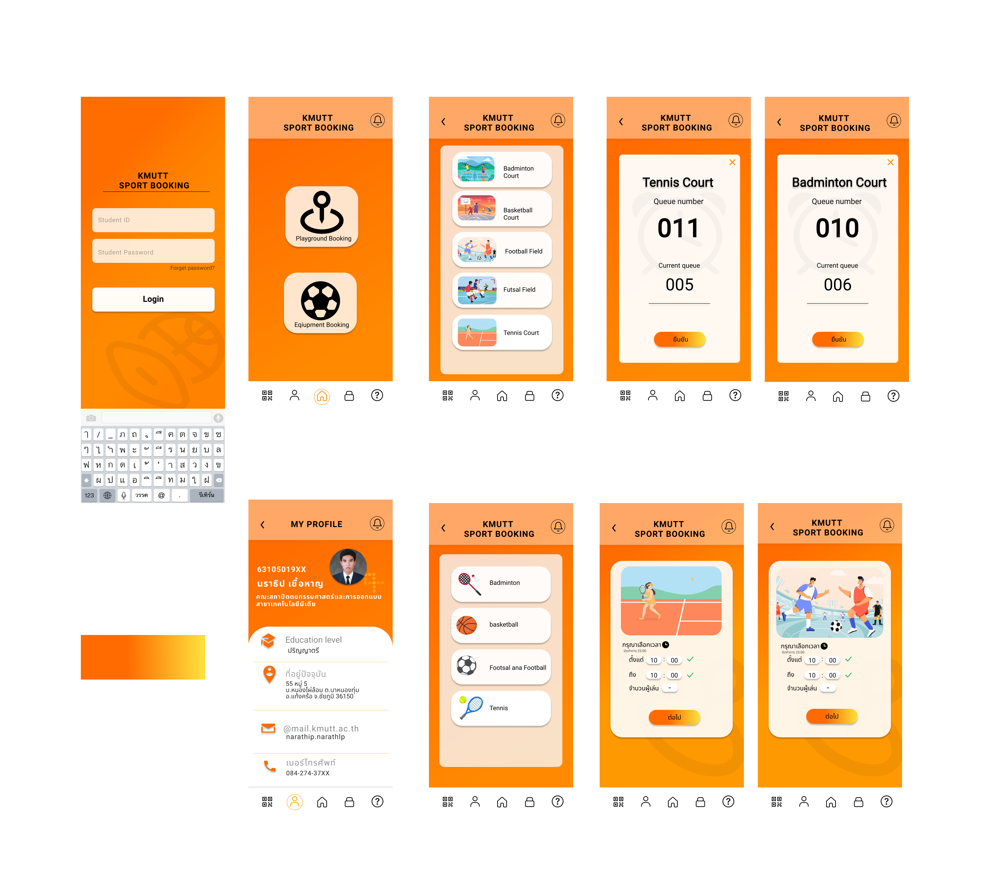

Program Design
ADHD Therapy
A program called ADHD Therapy has been developed for therapists treating children with Attention Deficit Hyperactivity Disorder (ADHD) aged 8 to 12 years. The program is designed to record information about therapists and the children undergoing therapy. The UI (User Interface) design of the ADHD Therapy program focuses on simplicity, clarity, and functionality to support the recording of information about children with ADHD, as well as the efficient and systematic management of essential data in an organized manner.
AR Anatomy
This program has been developed and designed for learning Anatomy, with a focus on three user interfaces that prioritize clarity and simplicity to prevent user errors. It is also designed to heavily emphasize the use of Augmented Reality (AR). The chosen colors aim to provide a comfortable and non-fatiguing viewing experience. Both the UI design and the AR implementation should be carefully crafted to enhance the program's usability and its effectiveness as a learning tool for Anatomy, aligning with the program's objectives.

Application Design
Chuanchim
The Chuanchim restaurant's food ordering application will present various menus on the main page.Display the logo of "Chuanchim" and images depicting the restaurant's ambiance. Show the main menu divided into Savory dishes Desserts Beverages and Healthy options. Display a list of food and beverages in each category. Show images Menu names Prices and brief descriptions of each item.

kmutt sport booking
This application has been designed to address and alleviate the issues related to booking sports facilities and sports equipment at KMUTT by replacing the traditional paper sign-up system with a digital application. The colors used in the application are orange and yellow, representing the identity of the university.
Website Design
Travel

Bakery Shop
Poster Design
Shopping Online

During the COVID-19 pandemic, online shopping has become the primary option for purchasing various products without leaving home. The poster design should reflect the convenience and safety that online shopping can offer, with "Nong OnShop" as a cute and friendly representative.
Covid-19

A 3-panel cartoon satirizing the COVID-19 money distribution, where the character comes up with the exaggerated idea of catching COVID to go on a trip. It emphasizes humor while reflecting the issue of wanting to travel but being hindered by money during COVID, helping viewers relax and laugh at the real situation.
Character Design


Tattoo Colour's concert
The design and planning of the LED Strip Light installation, tailored to fit the circular metal framework and the storage space beneath the stage, must consider both aesthetics and functionality. It involves selecting LED types that provide adequate lighting and allow for color control, enhancing the mood and dimension of the performance. At the same time, attention should be given to concealing wiring and control devices within the storage space under the stage, ensuring neatness and safety. Additionally, the electrical system must be properly connected to allow for adjustable lighting effects that can change according to the performance's timing or needs, creating a visually stunning experience for the audience and leaving a memorable impression.

S2O Songkran Music Festival
The design and planning of the LED Strip Light installation must consider the number of strips to be placed and the distance between them to ensure even light distribution and suitability for the event space. The plan should then be handed over to the installation team and the electrical team for smooth collaboration.
G-circuit Songkran Festival 2024
The control, testing, and inspection of the LED lighting system, including 4 types: Disco light, LED ball, LED tube, and Kinetic ring, consist of:
Control of Installation: Plan and install the lights appropriately, ensuring proper connection of the electrical system.
Testing: Check the functionality of each type of light, such as color changes and movement.
System Inspection: Inspect the entire lighting system to ensure that all lights and effects work as intended.
Jeff Satur's concert
For the installation of 4 Avatar trees for a concert, using LED Strip Lights of various lengths tailored to the characteristics of each tree, the goal is to achieve a visually appealing and striking result. Additionally, it is necessary to check the IP settings of each device to prevent errors in controlling the lights and to facilitate the efficient creation of lighting scenes that align with the performance requirements.
Here Comes the S.U.N.
Install LED Ball and control the lighting scene during the event.
Win Metawin's concert
Plan the installation and control of LED Ball and LED Tube for the VTR filming during the concert.